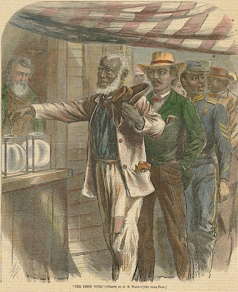

Directions: Your group has the file on how Congress took charge. Each station holds one record from the years 1866 to 1868. For every record, state which failure of the 1865 settlement the record answered. Work through the five stations in order, then deliver the closing verdict in Part 2.
Source: U.S. Congress, "Fourteenth Amendment, Section 1," 1868 (Constitution Annotated, Library of Congress). Audited TPSP bank record, fourteenth-amendment-section-1-1868. Section 1 is printed in full; there are no cuts.
Section 1. All persons born or naturalized in the United States, and subject to the jurisdiction thereof, are citizens of the United States and of the State wherein they reside. No State shall make or enforce any law which shall abridge the privileges or immunities of citizens of the United States; nor shall any State deprive any person of life, liberty, or property, without due process of law; nor deny to any person within its jurisdiction the equal protection of the laws.
Which failure of the 1865 settlement did this record answer: ____________________________
Section 1 opens by defining citizens. State the definition in the amendment's own words, and state whose claim to citizenship that sentence settles.
The section then binds the states three times. Name the three things no state may do, and state whether each limit is written to citizens or to any person.
Source: Teaching summary. This station is a summary built from the Reconstruction Acts as printed in the Statutes at Large, not a quotation from a period document. It is labeled a summary on its face so that students weigh it as a summary and quote the other stations, not this one, in their verdicts.
Congress passed the first Reconstruction Act on March 2, 1867, over President Johnson's veto, and added further acts on March 23 and July 19, 1867 to work out the details. The acts declared the existing governments of the ten unreconstructed states provisional, subject to Congress's authority. Tennessee, which had ratified the Fourteenth Amendment, stood outside the acts. The ten states were divided into five military districts: the First, Virginia; the Second, North Carolina and South Carolina; the Third, Georgia, Florida, and Alabama; the Fourth, Mississippi and Arkansas; the Fifth, Texas and Louisiana. Each district stood under a Union general, who was to register voters, supervise the election of constitutional conventions and later elections, remove officials who obstructed the acts, and protect persons and property where civil authority would not. Registration opened to every adult male citizen of a year's residence in his state, Black and white, except men barred for rebellion or felony. The conventions so elected were to write constitutions guaranteeing Black male suffrage. No state would return to representation in Congress until its new legislature had ratified the Fourteenth Amendment and Congress had approved its constitution and readmission.
Which failure of the 1865 settlement did this record answer: ____________________________
State what the acts did to the ten existing state governments, and state the two powers the summary gives each district commander that reach furthest into civil life.
State the three steps a state had to complete before it could return to representation, in the order the summary gives them.
Source: Teaching summary. This station is a summary built from the public record of the congressional investigations of the Memphis and New Orleans attacks of 1866, not a quotation from a period document. It is labeled a summary on its face. No image of either attack is used in this lesson.
In Memphis, Tennessee, on May 1, 1866, a street dispute between city police and Black soldiers lately mustered out of the Union army grew into three days of attacks on the city's Black community. White mobs, joined by police, killed 46 people, nearly all of them Black, wounded many more, and burned Black homes, schools, and churches across the city's southern districts. No one was punished for the killings in the city's own courts. In New Orleans, Louisiana, on July 30, 1866, a convention of Unionists met to revise the state constitution and take up Black suffrage. The city's mayor, a former Confederate officer, treated the meeting as unlawful, and police led an attack on a parade of Black supporters outside the hall and then on the delegates inside it. More than 30 people were killed, most of them Black Unionists, and many more were beaten and wounded. The commanding general of the district reported the attack to Washington as a massacre carried out by the police. Congressional committees investigated both attacks and printed the testimony, and northern newspapers carried the reports into the campaign for the elections of 1866.
Which failure of the 1865 settlement did this record answer: ____________________________
State, plainly and briefly, who carried out each attack and who its victims were, and state what protection the victims found in their own cities' courts and police.
The summary ends with the reports traveling north. State the two channels the summary names for that travel, and state the national decision in front of the voters who read them that fall.
Source: Articles of impeachment exhibited by the House of Representatives against Andrew Johnson, Article I, as transcribed in the Avalon Project, Yale Law School, History of the Impeachment of Andrew Johnson, Chapter VII. Cuts are marked with ellipses.
That said Andrew Johnson, President of the United States, on the 21st day of February, in the year of our Lord eighteen hundred and sixty-eight, at Washington, in the District of Columbia, unmindful of the high duties of his office, of his oath of office, and of the requirement of the Constitution that he should take care that the laws be faithfully executed, did unlawfully, and in violation of the Constitution and laws of the United States issue an order in writing for the removal of Edwin M. Stanton from the office of Secretary for the Department of War [...]
[The order, as quoted in the article:] "By virtue of the power and authority vested in me as President by the Constitution and laws of the United States you are hereby removed from office as Secretary for the Department of War, and your functions as such will terminate upon the receipt of this communication." [...] Which order was unlawfully issued with intent then and there to violate the act entitled "An Act regulating the tenure of certain civil offices," passed March 2d, 1867 [...] whereby said Andrew Johnson, President of the United States, did then and there commit and was guilty of a high misdemeanor in office.
Which failure of the 1865 settlement did this record answer: ____________________________
Article I charges one act as its crime. State the act, its date, and the two authorities the article says it violated.
The article quotes Johnson's removal order in full. State what the order tells Stanton, and state what the House had to prove about Johnson's intent to make the removal a high misdemeanor rather than a policy dispute.
Source: Alfred R. Waud, "The First Vote," 1867 (Harper's Weekly, November 1867; image described). Audited TPSP bank record, first-vote-waud-1867. The engraving is reproduced here from the public domain file held by the Library of Congress; the text below is the bank record's description, word for word.

A Harper's Weekly wood engraving showing a long line of Black men waiting to cast ballots at the polling table in the Reconstruction South. A white election official oversees the vote as each voter steps forward to drop a ballot into a glass ballot bowl.
Which failure of the 1865 settlement did this record answer: ____________________________
Describe the scene as the bank record presents it: who stands in the line, who oversees the vote, and what each voter does as he steps forward.
The men in this line are voting under the Reconstruction Acts of 1867, a year before the Fourteenth Amendment was ratified. State which step of the acts' machinery this scene shows, and state what the orderliness of the line was meant to tell the northern readers of Harper's Weekly.
Answer the lesson question from the file as a whole. Did Congress in 1867 act as a conqueror, as a constitution maker, or as both at once? Your verdict must use at least three stations, must state the strongest version of the answer you reject before you reject it, and must end by naming the one act, the amendment, the Acts, or the removal fight, that you judge did the decisive work.
Stations I will use (at least three, by number):
The strongest version of the answer I am rejecting, in one or two sentences:
The one act I judge did the decisive work, and why:
Write the verdict:
Station 1. Section 1 defines citizens as all persons born or naturalized in the United States, and subject to its jurisdiction, settling the citizenship of Black Americans against Dred Scott. The three limits are that no state shall abridge the privileges or immunities of citizens of the United States, deprive any person of life, liberty, or property without due process of law, or deny to any person within its jurisdiction the equal protection of the laws. The first limit is written to citizens; the second and third are written to any person.
Station 2. The acts declared the ten governments provisional and subject to Congress. The district commanders' furthest reaching powers are removing civil officials who obstructed the acts and protecting persons and property where civil authority would not,. The three steps to return, in order, are a constitution guaranteeing Black male suffrage written by an elected convention, ratification of the Fourteenth Amendment by the new legislature, and Congress's approval of the constitution and readmission. This station is a teaching summary; students should cite its terms as the summary's, not as a period quotation.
Station 3. In Memphis, white mobs joined by police attacked the Black community for three days, killing 46 people and burning homes, schools, and churches; the city's own courts punished no one. In New Orleans, police led by the mayor's authority attacked Black marchers and then the Unionist delegates, killing more than 30 people. In neither city did victims find protection from a police force that was itself among the attackers. The reports traveled through the printed testimony of congressional investigations and through northern newspapers, reaching voters deciding the elections of 1866, which would decide whether Congress could govern over Johnson's vetoes. This station is a teaching summary.
Station 4. The charged act is Johnson's written order of February 21, 1868 removing Edwin M. Stanton as Secretary of War. The article says it violated the Constitution and laws of the United States, and in particular the Tenure of Office Act of March 2, 1867. The order tells Stanton that he is removed and that his functions terminate on receipt of the letter. To make the act a high misdemeanor, the House had to prove intent: that the order was issued unlawfully and with intent to violate the Tenure of Office Act, not as a good faith dispute over its meaning.
Station 5. As the bank record presents it, a long line of Black men waits at a polling table in the Reconstruction South; a white election official oversees the vote, and each voter steps forward in turn to drop his ballot into a glass ballot bowl. The scene shows the acts' registered electorate voting, for the conventions and governments the acts required, the machinery of Station 2 in operation. Its orderliness answered northern fears that Black suffrage meant disorder: Waud drew the voters dignified and composed for the magazine's northern readership, and students should read the image as an argument to that audience as well as a record of the vote.
Closing verdict. Full credit verdicts state the rejected answer at its strongest first. For conqueror: Congress set aside ten elected governments, ruled them through five generals, barred classes of men from the rolls, and held readmission hostage to a constitutional amendment. For constitution maker: Congress wrote its terms into the Constitution itself, submitted them to the states, and rebuilt the southern governments through registration, elected conventions, and new constitutions that broadened the electorate beyond anything the South had run. The strongest verdicts hold both at once: the Acts governed like a conqueror in 1867 so that the amendment could settle like a constitution for the longer term. Credit either judgment defended from three stations, with Stations 2 and 3 weighed as summaries and the quotation work carried by Stations 1 and 4.